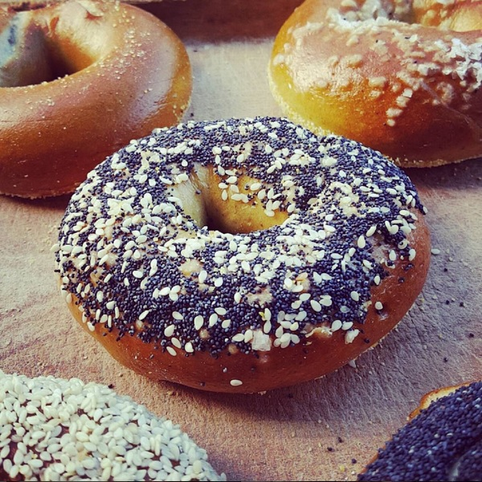

They spread flat
Dough was warm going into the fridge, or the boil was timid. Chill shaped rings well and keep the simmer rolling.
Boil first. That is the secret.
A true bagel is defined by one unusual step: a swim in malt water before it meets the heat. Get the dough stiff, the night cold, and the boil honest, and Monday-morning bagels become your kitchen's tradition too.
The payoff

Troubleshooting lens
Dough was warm going into the fridge, or the boil was timid. Chill shaped rings well and keep the simmer rolling.
Over-boiled. Sixty seconds per side is plenty; longer cooks the outside into leather before the oven finishes it.
Weak boil water or shy oven. Malt up, verify temperature, finish dark — pale-crust fixes.
Before you ask
The bath gelatinizes outer starch and sets the skin pre-oven, locking dense chew inside and gloss outside. No boil = round bread with a hole.
Deepens browning and adds faint malty sweetness. Honey plus a pinch of baking soda approximates it.
Cold slows yeast while flavor builds and skins dry — rings hold shape in the boil and blister better (cold retard).
Bread flour at 12–13% protein minimum. All-purpose makes soft rings, not bagels.
Keep going
Soft loaf for the other mornings: sandwich bread.
Our bagels sell fast: where to find them.
Baking along? Keep the habit free forever - create your SF Baker account and put the Sour Flour Hotline behind every bake.